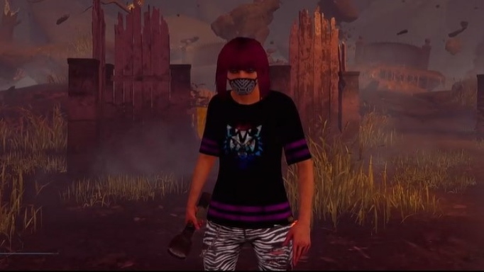
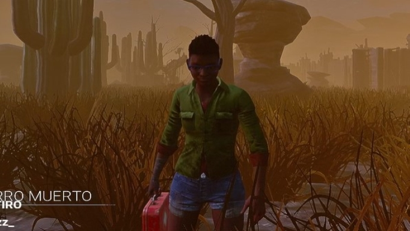

TOP: Los 3 mejores supervivientes de Dead by Daylight
Puesto 3: The Cat Ávila

The Cat Ávila está en éste puesto principalmente por la comunidad que tiene, cuyos integrantes lo superan
por mucho en habilidad (caso de Darkar, Shishinico y entre otros). Pero el creador de éste sitio web ha
recibido un soborno y es por eso que aparece en este top.
Autoproclamado main survi, main nurse y main gancho, es un creador de contenido principalmente de Dead By
Daylight que tiene +6000hs de juego. Se lo ha visto destacar junto con su equipo competitivo "Iridescent Team"
en torneos, llevándose casi siempre el primer lugar.
Tiene un record de 12seg de persecución en un torneo reciente contra un Billy, record superado solamente por
una Claudette de cabello corto que se encuentra más arriba en éste top.
Puesto 2: FranT
De éste usuario se sabe muy poco, es más, ni siquiera está probada su existencia... Pero por el temor que su
nombre influye en los killers, es digno de mención.
Cuenta la leyenda que el superviviente que se encuentra en el anterior puesto, es main nurse, uno de los
asesinos más difíciles de usar, y también, uno de los más fuertes... En una de las noches de torneos 1vs1 que
suele organizar dicho usuario en Twitch, hizo acto de presencia el susodichio superviviente fantasma. Su mera
presencia fue suficiente para que The Cat Ávila decida abandonar ese enfrentamiento... Se quedó totalmente
petrificado y posteriormente se desconectó sin siquiera asestar un golpe.
Existen los rumores de que el motivo por el cual ésta nurse se desconectó en realidad, es porque le cayó
justo en ese momento un raid de Agustín Unaplay... Pero nadie se cree esa historia.
Puesto 1: Las Claudette con el pelo corto

Con una skin que ya no puede ser conseguida en el juego de forma tradicional, el ser humano que use ese tipo
de cabello en una Claudette, es dotado de habilidades sobrehumanas para el juego, suele ser encontrada en
torneos, para activar el mayor potencial posible de un equipo... Eso sí, no es recomendable usar esta ventaja
por más de dos partidas seguidas si se desea conservar los dedos luego del enfrentamiento.
Hay pocos usuarios capaces de manejar semejante poder sin salir lastimados, sin embargo, se dice que han sido
condenados a no poder abandonar el juego nunca más.